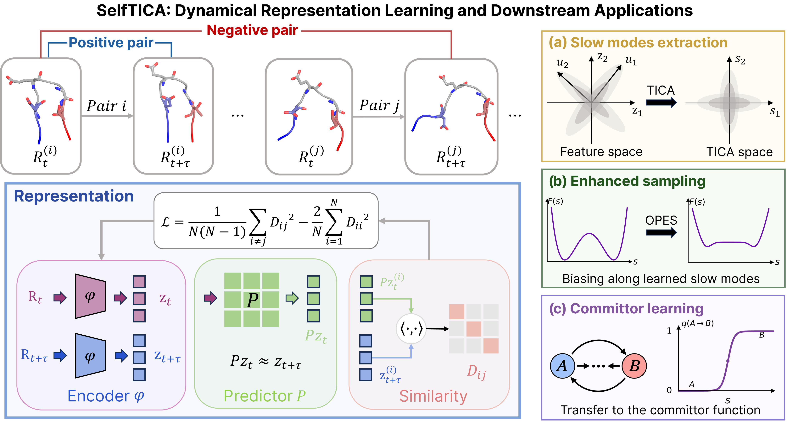

arXiv

SelfTICA: contrastive learning of dynamical representations for rare-event sampling and characterization
scholar 0
Rare events govern many important molecular processes but remain difficult to characterize within accessible simulation timescales. This challenge has motivated machine-learning methods to construct low-dimensional collective variables for specific objectives, including state discrimination, slow-mode identification, and committor-function approximation. Here we introduce SelfTICA, a self-supervised framework that uses contrastive learning on time-lagged configurations to learn a latent representation of the slow modes governing relevant transitions. Once learned, this representation is frozen and reused across downstream tasks, including collective variables construction, enhanced sampling, free-energy estimation, and committor learning. Compared with direct slow-mode optimization, SelfTICA improves training stability and provides collective variables even from limited and exploratory trajectories, accelerating rare-event sampling and enabling accurate free-energy estimation. The dynamical information encoded during pretraining also accelerates committor learning and enables characterization of transition-state regions. These results show that contrastive learning of slow dynamical representations provides a common foundation for rare-event sampling and mechanistic analysis.